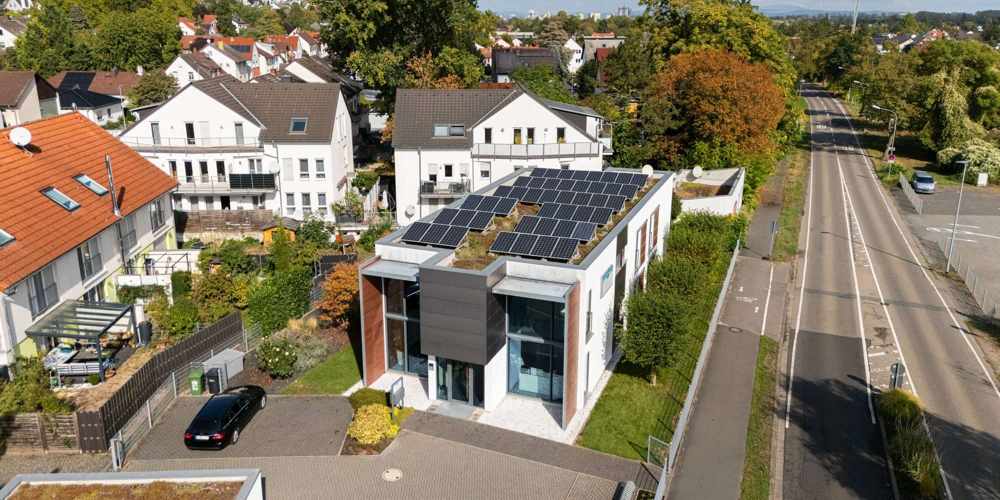
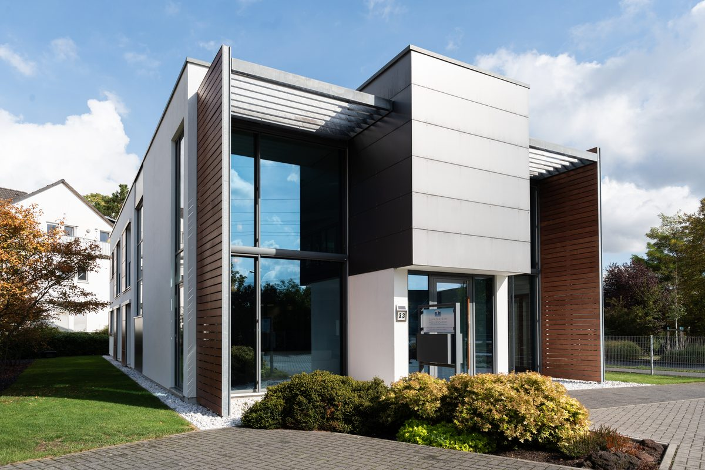
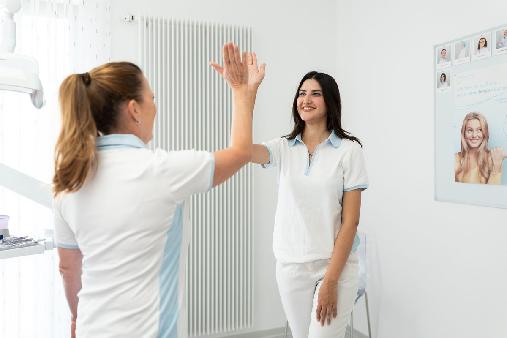
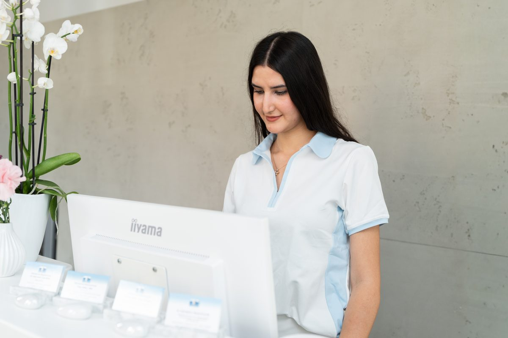

Praxis
Ein Haus, gebaut für Ihr Wohlbefinden.
Weiß gekachelte Wände suchen Sie bei uns vergeblich. Unsere Praxis liegt in einem eigens dafür errichteten, nachhaltigen Haus mit viel Licht und freundlicher Atmosphäre.
Architektur
Modern, nachhaltig und hell.
Unsere Praxisräume liegen in einem Niedrigenergiehaus, bei dem von Anfang an auf hochwertige und nachhaltige Baustoffe geachtet wurde. Wir heizen und kühlen klimaneutral, und unsere Solaranlage erzeugt bis zu 50 Prozent der Energie, die wir brauchen.
Großzügige Räume, große Fensterflächen und eine angenehme Beleuchtung fügen sich zu einem stimmigen Gesamtbild. Vier moderne Behandlungszimmer sind mit aktueller Technik ausgestattet.

Wohlfühlen
Eine Atmosphäre, in der man gerne wartet.
Unsere Wartelounge ist hell und großzügig. Für die Kleinen gibt es eine Leseecke mit Kinderbüchern, größere Kinder vertreiben sich die Zeit in der TV-Ecke. Gerne reichen wir Ihnen ein Getränk. Lange warten müssen Sie aber nicht: Kurze Wartezeiten gehören für uns zur Qualität.

Eigenes Dentallabor
Kronen, Brücken und Inlays aus Keramik oder Gold fertigen wir im eigenen Haus, individuell und passgenau. So können wir flexibel reagieren und kurzfristig anpassen. Für besondere Arbeiten kooperieren wir mit deutschen Meisterlaboren.
Service und Qualität
Ausführliche Beratung vor und nach jeder Behandlung ist für uns selbstverständlich. Unser Team bildet sich laufend fort, damit Sie von aktuellen Methoden profitieren.
Patenschaft für Kindergärten
Als Patenschaftszahnarzt betreuen wir zwei Kindergärten in Mainz-Laubenheim. Die Kinder erkunden unsere Praxis spielerisch, damit der Zahnarzt ein Freund wird.

Empfang
Herzlich willkommen.
Am Empfang kümmern wir uns um Ihre Termine und alle Fragen rund um Ihren Besuch. Rufen Sie uns an unter 06131 86926 oder schreiben Sie uns an info@zahnzentrum-messerschmidt.de.
Termin vereinbaren
Wir sind gerne für Sie da.
Montag bis Donnerstag von 8 bis 20 Uhr, freitags von 8 bis 16 Uhr.